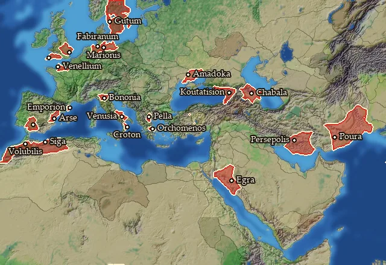
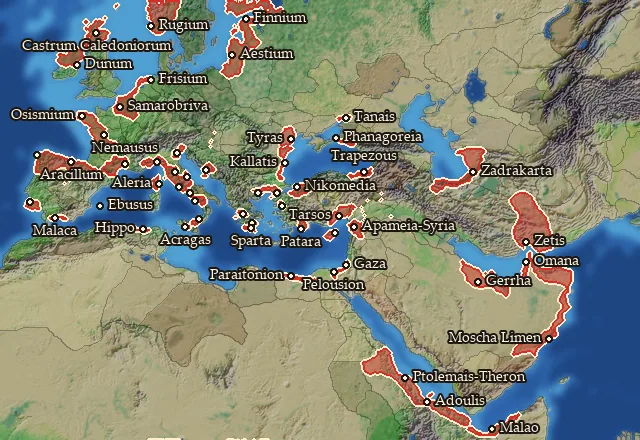
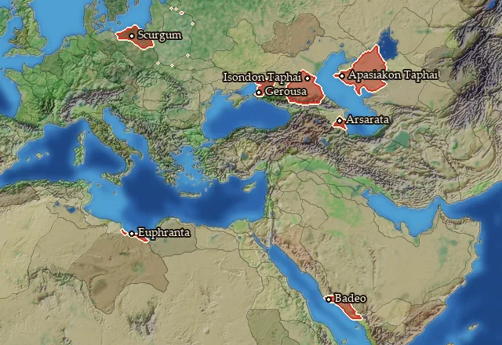
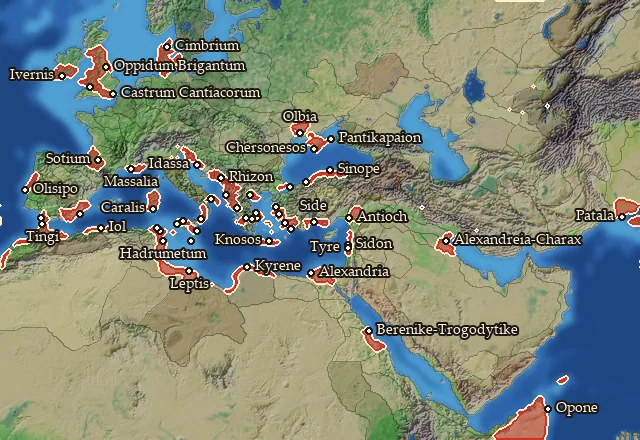

Ports
← regions and settlements · wiki index
How good a natural harbour the coast gives, before you build anything. It sets how far up the port chain a settlement can go: a coast with no natural harbour allows no port at all, and the others allow up to a Trade Port, a Shipwright or a Dockyard. A Harbour Improvement raises that limit by one level; the best harbours cannot take one, as they are already at the top.
| Harbour | Regions | Builds | Blocks | Effects | Units | Harbour | Regions | Builds | Blocks | Effects | Units |
|---|---|---|---|---|---|---|---|---|---|---|---|
| No natural harbour | 7 | 1 | — | — | — | Natural harbour up to Shipwright | 54 | 5 | — | — | — |
| Natural harbour up to Trade Port | 22 | 3 | — | — | — | Natural harbour up to Dockyard | 53 | 4 | — | — | — |
Natural harbour up to Trade Port

On 22 regions.
- Lets you build: 3 building levels: Harbour Improvement, Trade Port, Shipwright
Regions with this harbour (22)
Albania · Apulia · Boia · Boiotia · Borysthenes · Chaucia Maior · Dumnonia · Emathia · Emporitia · Gedrosia · Gutia · Kolchis · Kroton · Langobardia · Lechienia · Mauretania · Persia · Saguntia · Shigan · Trinobantia · Turdetania Septentrionalis · Venellia
Natural harbour up to Shipwright

On 54 regions.
- Lets you build: 5 building levels: Harbour Improvement, Trade Port, Shipwright, Dockyard, The Cothon of Carthage
Regions with this harbour (54)
Adouli · Aestia · Aitolia · Akragas · Ambiana · Apamene · Arecomicia · Argolis · Artabria · Ay-Bushim · Bithynia · Boreia Hyrkania · Caledonia · Campania · Cantabria · Conia · Edonis · Epetia-Salonitis · Epi Theron · Etruria · Finnia · Frisia · Gazaia · Liguria · Gerrhaia · Hellenike Makronia · Hesperos Aigyptos · Ivernia Orientalis · Kaikia · Kallatia · Kardia · Kilikia Pedias · Kyrnos · Lakonia · Latium · Lykia · Malaka · Malaotis · Mamertina · Notia Karmania · Omana Kolpos · Omanitis · Osismia · Pelousiake · Phanagoreion · Picenum · Pictonia · Poseidonia · Rugia · Salamina · Tanaitis · Tyrasia · Venetia · Xupon
No natural harbour

On 7 regions.
- Lets you build: 1 building level: Harbour Improvement
Regions with this harbour (7)
Apasiakaia · Bastarnia Vetus · Isondaia · Kaspiane · Kassanitis · Maiotis · Syrtis
Natural harbour up to Dockyard

On 53 regions.
- Lets you build: 4 building levels: Trade Port, Shipwright, Dockyard, The Cothon of Carthage
Regions with this harbour (53)
Achaia · Adrumet · Agadir · Ambrakikos Kolpos · Aquitania · Ardiaia · Attike · Ay-Khol · Boreia Trogodytike · Bosporos · Brigantia · Cantiacia · Charakene · Cimbria · Epikrateia · Euboia · Gylakeia · Gynaikopolites Nomos · Hellenike Mariandynia · Ionia · Ivernia Meridionalis · Karaly · Karia · Kimmerikos Bosporos · Korinthia · Kyrenaike · Lepqi Adir · Lesbos · Liburnia · Magna Graecia · Maleth · Mastienia · Mikra Chersonesos · Minoa · Mygdonia · Olbiana · Oponis · Pamphylia · Patalene · Qart-Khadasht · Rhegion · Rhodos · Segobrigia · Siluria · Sinopeia · Syria · Tagia · Ting · Trinakria · Xatiq · Zidun · Ziz · Zur